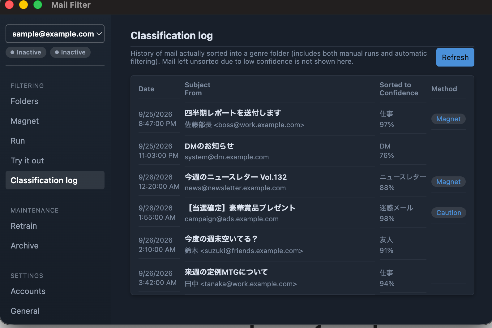

A desktop mail client that automatically sorts your IMAP mail using a Bayesian classifier.

Key Features
- Bayesian-classifier-based sorting into genres (friends, work, DMs, etc.), learned per folder
- Automatic spam detection and sorting
- Genre management and folder creation tied to your IMAP folder structure
- Supports Gmail (OAuth2), Yahoo!, Yahoo! JAPAN, iCloud, AOL, Fastmail, Zoho, and any generic IMAP server